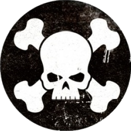

Chaplain
| Chaplain | |
|---|---|
 Symbol of the Reclusiam, the order of Chaplains in a Codex Chapter Artwork © Games Workshop | |
 Artwork © Games Workshop Artwork © Games Workshop | |
| Notable holder Ortan Cassius Master of Sanctity of the Ultramarines, late 41st millennium | |
| Adeptus Astartes Reclusiam Chapter Master Codex Astartes | |
| Style | Chaplain; Interrogator-Chaplain (in the Dark Angels) |
| Type | Priest and warrior of the Adeptus Astartes |
| Member of | The Reclusiam |
| Reports to | The Master of Sanctity |
| Seat | The Chapter's fortress-monastery |
| Assigned by | The Master of Sanctity, who posts the Chapter's Chaplains to its companies |
| Formation | 001.M31, the Council of Nikaea[a] |
| First holder | Not recorded; Erebus was First Chaplain of the Word Bearers by the end of the Great Crusade |
| Insignia | Rosarius; Crozius Arcanum; skull helm; black armour |
A Chaplain is a priest-warrior of the Adeptus Astartes. He keeps his Chapter's rites, guards its spiritual purity, teaches its warriors their traditions and leads them in battle with prayer and example. A Chaplain is attached to each company of a Chapter that follows the Codex Astartes. The Chapter's Reclusiam, its central shrine, is kept by a senior Chaplain called the Reclusiarch, and the Chapter's spiritual head is the Master of Sanctity, though the two offices are sometimes held by one warrior.[1][2]
The office was created at the Council of Nikaea in 001.M31, in the early years of the Great Crusade. When the Emperor's Decree Absolute ordered the Legions to abolish their Librarius, the "Chaplain Edict" required every Legion to appoint chaplains, on the model of the Word Bearers, to keep its warriors loyal to the Imperial Truth. Imperial accounts attribute the edict to the Emperor himself, while others credit Malcador the Sigillite, who issued it through the Council of Terra in his name. In the Horus Heresy the Word Bearers' own chaplains proved to be chief agents of Chaos, but the office endured in the loyal Chapters.[3][2]
Chaplains are recognised by their black armour, skull-faced helms, the Crozius Arcanum they carry as both mace and badge of office, and the Rosarius, a protective amulet that marks their rank. Chapters differ on the Emperor's divinity: many revere him as a god, while others hold him to be the supreme example of what a man can become. Most keep their own ancient traditions and pay little heed to the priests of the Imperial Cult.[2]
History
[edit]Origins in the Word Bearers
[edit]The first chaplains of the Astartes served in the XVII Legion, the Word Bearers, during the Great Crusade. Lorgar raised them to preach his Legion's worship of the Emperor and to lead the conversion of conquered worlds; the most prominent of them was the First Chaplain Erebus. After the Emperor punished the Legion's religious excesses by razing Monarchia on Khur, the Word Bearers turned in secret to the Ruinous Powers, and their chaplains became the first preachers of the heresy that would later corrupt Horus.[4][b]
The Council of Nikaea
[edit]At the Council of Nikaea in 001.M31 the Emperor ruled on the place of psykers and ordered that every Legion abolish its Librarius. The Chaplain Edict that followed required each Legion to appoint officers who would see to the spiritual well-being of its warriors, enforce the ban on psychic practice and keep them faithful to the Imperial Truth. They were to be chosen from the warriors most steadfast in duty and loyalty to their primarch and the Emperor. Most primarchs complied, but some appointed no chaplains at all and only claimed they had, a deceit that became plain once the Heresy broke out.[3][2]
The Horus Heresy
[edit]During the Horus Heresy (005–014.M31) the Word Bearers' chaplains, Erebus chief among them, served the cause of Chaos, and Erebus is held by most Imperial records to have arranged the wounding of Horus on Davin. In the traitor Legion the Chaplain Edict had given the Word Bearers a place in the councils of every Legion.[4]
The Codex Astartes
[edit]In a Chapter that follows the Codex Astartes, every one of the ten companies has its own Chaplain, who is second to the company captain in rank, and its own chapel. The Master of Sanctity, the Chapter's chief Chaplain, usually ranks below only the Chapter Master. The Reclusiarch trains new Chaplains, while the Master of Sanctity assigns the Chaplains to their companies. The Codex lists the Chaplain's standard wargear, and some Chapters add duties of their own.[1][2]
Since the Ultima Founding of 999.M41, Primaris Chaplains have served alongside their Firstborn brothers.[1]
Duties
[edit]A Chaplain is the spiritual leader of his company or Chapter. His duties are religious and martial:
- Rites. He administers the Chapter's rituals and ceremonies of initiation, vindication and redemption.
- Instruction. He instils the values and beliefs of the Chapter in its battle-brothers and guards them against heresy and false pride.
- Chapter duties. In the Blood Angels and their successors, the Chaplains seek out signs of the Black Rage and lead the Death Company into battle.
- Battle. He fights in the front rank, chanting the liturgies of battle and striking with his crozius, and urges his brothers to greater devotion.
Insignia and wargear
[edit]A Chaplain's armour is black by tradition and by the Codex Astartes, though many Chapters add their own colours and insignia. His helm is shaped as a skull, a death-mask that evokes the visage of the Emperor and reminds all who see it of mortality. His two marks of office are:[1]
- the Crozius Arcanum, a power weapon in the form of a mace, the symbol of his office and his chosen weapon of war;
- the Rosarius, an amulet that conceals a personal shield generator, often given to Chaplains by cardinals and other high priests of the Adeptus Ministorum as a sign of the shared faith of Astartes and Ecclesiarchy.

Senior ranks and variants
[edit]Reclusiarch and Master of Sanctity
[edit]The Reclusiarch cares for the Chapter's Reclusiam and trains new Chaplains. Above him stands the Master of Sanctity, the chief Chaplain and spiritual head of the Chapter, whose rank is usually subordinate only to that of the Chapter Master. The Master of Sanctity of the Ultramarines, Ortan Cassius, is close to four hundred years old and fought beside Marneus Calgar against Hive Fleet Behemoth in the First Tyrannic War.[1][2]
Chapter variants
[edit]- The Dark Angels keep Interrogator-Chaplains, members of the secret Inner Circle whose rank stands above the company level. They hunt the Fallen and force them to repent before they are executed.[2]
- The Space Wolves have no Chaplains but Wolf Priests, who combine the duties of Chaplain and Apothecary; the senior of them is Ulrik the Slayer, the Wolf High Priest.[2]
- The Iron Hands have no Chaplains but Iron Fathers, who combine the duties of Chaplain, Apothecary and Techmarine.[2]
- The Black Templars are among the few Chapters that acknowledge the doctrines of the Ecclesiarchy. Their Reclusiarch Grimaldus is honoured as the Hero of Helsreach for the defence of the Temple of the Emperor Ascendant in 998.M41 during the Third War for Armageddon.[4]
- The Blood Angels Chaplain Lemartes, himself afflicted by the Black Rage but able to master it, leads the Death Company in battle.[2]
Notable Chaplains
[edit]| Name | Chapter or Legion | Rank | Period | Known for |
|---|---|---|---|---|
| Erebus | First Chaplain | M30–M31 | Corrupted Horus; renegade | |
| Ortan Cassius | Master of Sanctity | M41–M42 | Veteran of the First Tyrannic War (745.M41) against Hive Fleet Behemoth | |
| Grimaldus | Reclusiarch | M41–M42 | Hero of Helsreach (998.M41) | |
| Asmodai | Interrogator-Chaplain | M41–M42 | Hunter of the Fallen; oldest and most successful of the Dark Angels' Interrogator-Chaplains | |
| Lemartes | Guardian of the Lost | M41–M42 | Leader of the Death Company | |
| Ulrik the Slayer | Wolf High Priest | M41–M42 | Guardian of the Sons of Russ |
Timeline
[edit]| Date | Event |
|---|---|
| Great Crusade | Lorgar appoints chaplains in the Word Bearers, before Nikaea (no year recorded) |
| 001.M31 | Council of Nikaea: the Chaplain Edict requires every Legion to appoint chaplains |
| 005–014.M31 | Horus Heresy: the Word Bearers' chaplains spread Chaos through the traitor Legions |
| 998.M41 | Reclusiarch Grimaldus holds Helsreach on Armageddon |
| 999.M41 | Ultima Founding: first Primaris Chaplains |
See also
[edit]Notes
[edit]- ^ The office had precedent in the Word Bearers, whose primarch Lorgar appointed chaplains to his Legion before Nikaea.
- ^ Khur was brought into Compliance in 903.M30. Monarchia was destroyed some sixty years later, in 964.M30 by the wiki's reckoning (see Word Bearers).
References
[edit]- ^ a b c d e Codex Adeptus Astartes - Space Marines (8th Edition). Games Workshop. pp. 64, 145. Codex: Space Marines (8th Edition, Revised Codex). Games Workshop. pp. 65, 116, 118, 188.
- ^ a b c d e f g h i j Index Astartes II, "For the Emperor - Space Marine Chaplains". Games Workshop. Warhammer 40,000: Index Astartes - Chaplains (digital edition). Games Workshop.
- ^ a b Index Astartes IV, "Dark Apostles - The Word Bearers Space Marine Legion". Games Workshop. "Council of Nikaea". Warhammer 40k Wiki (Fandom).
- ^ a b c Index Astartes IV, "Dark Apostles - The Word Bearers Space Marine Legion". Games Workshop. Dembski-Bowden, Aaron (2009). Helsreach (novel). Black Library.